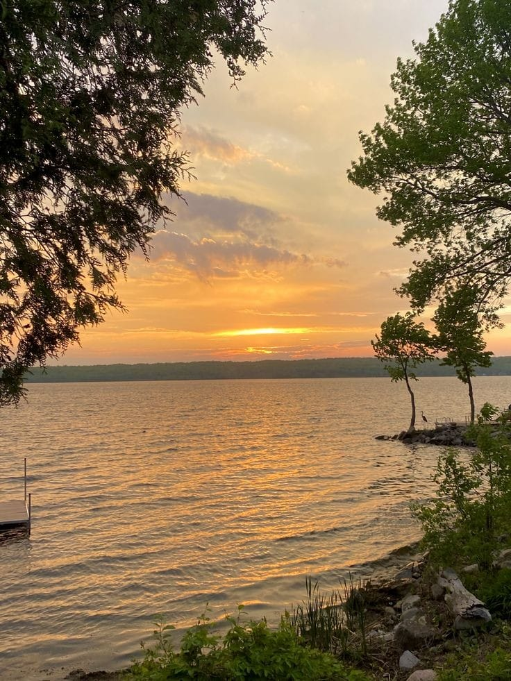

Privilege of Place
1. Hidden Gems for tourist to explore beautiful and informative place such as Selangor Fruit Valley
Selangor Fruit Valley or SFV is a tropical fruit farm with an area of 646 hectares. The plants of choice are star fruit, guava, rambutan, pulasan, papaya and so on. This farm was created to respond to the desire of the Selangor State Government to modernize the agricultural sector in line with the vision and mission of PKPS. Through the development of this SFV, it will be able to make the area more viable and commercial in addition to generating the agricultural industry and the state's agribusiness. In 2022, SFV has increased activities and renovations, which attracted more visitors. Every week, groups of kindergarten and preschool children also have a study tour at Fruit Valley.


2. Healing Place
A small lake for people to calm their mind, Tasik Unisel Bestari Jaya. It also far from the city. The atmosphere here is calmer and not as busy as in the city. Most of the goods and food here are much cheaper. In addition, the distance from one place to another is closer and public transport such as buses and taxis are also easily available
